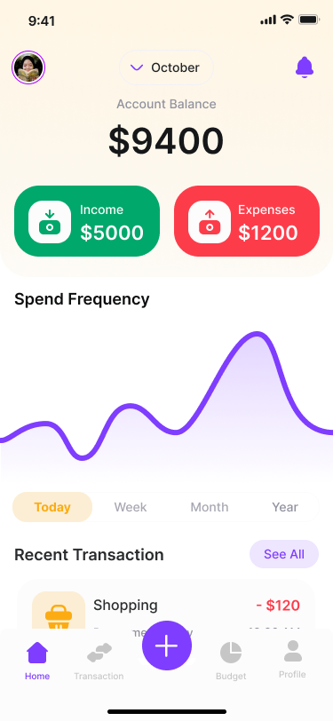

projects
Explore a selection of my work, showcasing how I approach design challenges. Each project reflects my commitment to creating user-centered experiences that blend functionality with aesthetic appeal.
-
Challenges
Balancing complex financial data visualization with user accessibility.
-
Outcome
